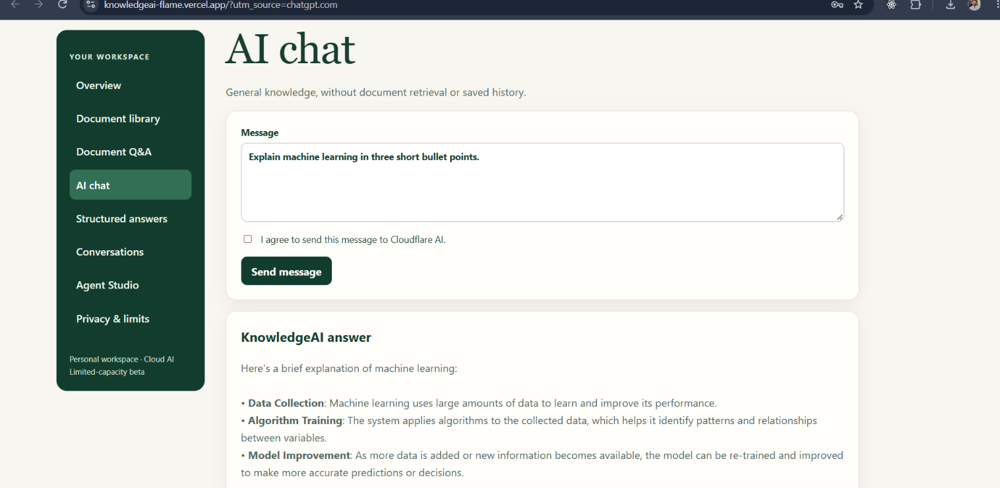

04 / APPLIED AI / LIVE CLOUD BETA
KnowledgeAI.
A cloud workspace for document intelligence, persistent AI conversations and human-approved reports. Built to make answers more inspectable and to separate generated summaries from verified calculations.

What the system does
Document intelligence
Index TXT and Markdown, retrieve relevant passages using embeddings and answer with supporting source quotations.
Persistent conversations
Save account-scoped conversation history and use recent messages to answer follow-up questions.
Agent Studio
Draft reports with AI summaries and deterministic calculations; require human approval before export.
Cloud workspace
Authenticate accounts, store personal workspace resources and enforce application usage limits.
System architecture
Python, FastAPI, HTML, CSS, JavaScript, PostgreSQL, semantic embeddings and Pytest.
Verification evidence
- Document indexing, source-supported Q&A and conversation recall tested in local cloud-connected preview.
- Agent draft and approval tested; average of supplied values 85, 92 and 78 correctly reported as 85.0.
- Three browser-level account-isolation views verified.
- Six selected resource-control tests passed.
- Eight production HTTP endpoint checks returned expected status codes; production AI chat returned an answer.

Limitations and next steps
Limited-capacity public beta. Use non-sensitive information only. Consented content is processed by Cloudflare AI and saved workspace content is stored in Neon PostgreSQL. AI answers may be incorrect. Email verification, account deletion and password recovery are not implemented. Full security auditing, database restoration drills and large-scale load testing remain outstanding.